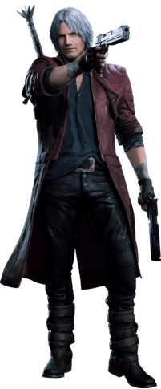
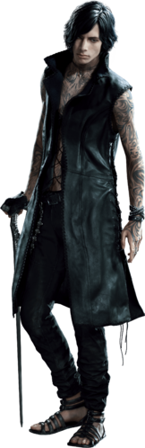
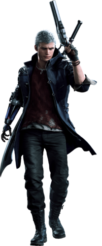
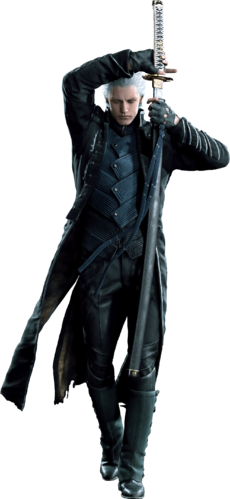
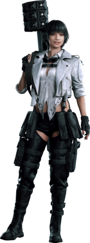
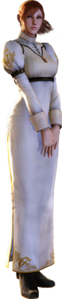

Dante is the recurring protagonist of the Devil May Crie franchise,
and the main playable character for the majority of the games in the series.
He is the second son of the demon Sparda and the human Eva, the younger twin brother of Vergil, and the uncle of Nero.
Dante is a paranormal mercenary, private investigator and vigilante Devil Hunter dedicated to exterminating evil demons and other malevolent supernatural forces;
a mission he follows in pursuit of those that killed his mother and corrupted his brother.

V is one of the main protagonists and the third playable character introduced in Devil May Cry 5.
A human with demonic ties, V presents himself as Dante's new client to put him on the trail of Urizen and takes Nero as backup insurance.
It's revealed later that V is, in fact, the human half of Vergil.

Nero is one of the main protagonists of the Devil May Crie series.
He first appeared as a playable character in Devil May Crie 4, and later in Devil May Crie 5.
He is the son of Vergil, nephew of Legendary Devil Hunter Dante, and grandson of Legendary Dark Knight Sparda.
He was raised in Fortuna and served as a Holy Knight in the Order of the Sword, a religious group that worships Sparda and fights to protect the world from demons.

Vergil is the son of the demon Sparda and the human Eva, the elder twin brother of Dante,
and the father of Nero. He is one of the main characters in the Devil May Crie series, introduced in the first game as the secondary antagonist,
one of the main antagonists of Devil May Crie 3: Dante's Awakening and the final antagonist in Devil May Crie 5.
In addition to being a boss character in games he becomes playable in Special Editions of Devil May Crie 3 through 5

Lady is a human Devil Hunter who first appeared in Devil May Crie 3: Dante's Awakening as both a supporting character and a boss character.
She is the daughter of Arkham and sought to hunt him down, encountering Dante in the process. After the events of Devil May Crie 3, she joins Devil May Crie.
She also appears as a playable character in Devil May Crie 4: Special Edition and appears again as a supporting character in Devil May Crie 5.
While her preferred name, "Lady", was given to her by Dante, her birth name is Mary Ann Arkham

Kyrie is a supporting character first appearing in Devil May Crie 4.
She is the younger sister of the leader of the Order of the Sword's Holy Knights, Credo, and the songstress for the Festival of the Sword. Kyrie is the childhood friend of Nero,
as well as his love interest. The love between Kyrie and Nero began before the events of Devil May Crie 4 and it is used as major plot point during the game.